Ambiente curato
Spazi recentemente ristrutturati, puliti e accoglienti.
Camera privata nel centro storico di Quartu Sant'Elena
Marconi306 offre ingresso indipendente, bagno privato e cortile riservato in una posizione centrale: servizi raggiungibili a piedi e collegamenti comodi con Cagliari, il Poetto e la costa, anche per chi viaggia senza auto.
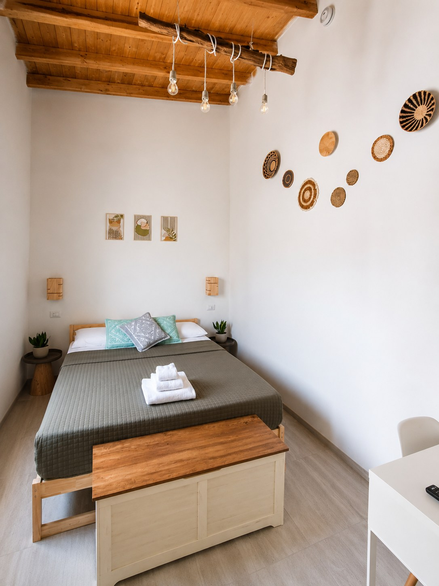
La camera
Una camera matrimoniale luminosa e recentemente ristrutturata, con ingresso indipendente, bagno privato e cortile ad uso esclusivo. Nel centro storico di Quartu Sant'Elena, è una base pratica per soggiorni di piacere o di lavoro e per visitare Cagliari e il Sud Sardegna.

Spazi recentemente ristrutturati, puliti e accoglienti.
Camera con bagno privato e cortile ad uso esclusivo.
Contatto diretto, più semplicità e migliore tariffa disponibile.

La struttura
Marconi306 nasce dal recupero di una tradizionale abitazione nel centro storico di Quartu Sant'Elena. La camera è pensata per offrire privacy, semplicità e comfort moderno, con accesso riservato e spazi curati.
Perché scegliere Marconi306
Tutto ciò che serve per un soggiorno pratico e rilassante nel Sud Sardegna.
Massima autonomia durante il soggiorno.
Spazi ad uso esclusivo, curati e funzionali.
Connessione comoda anche per smart working.
Centro storico, servizi, terminal dei bus urbani CTM e fermate dei bus extraurbani ARST raggiungibili comodamente a piedi.
Se prevedi di arrivare fuori dall'orario di check-in, contattaci in anticipo: faremo il possibile per trovare una soluzione.
Gallery
Camera, bagno privato, cortile e dettagli della struttura.
Posizione centrale
Marconi306 si trova già nel centro storico: Basilica di Sant'Elena, Parco Matteotti e Via Eligio Porcu sono a circa un minuto a piedi. Viale Colombo, con locali, negozi e servizi, si raggiunge in circa cinque minuti.
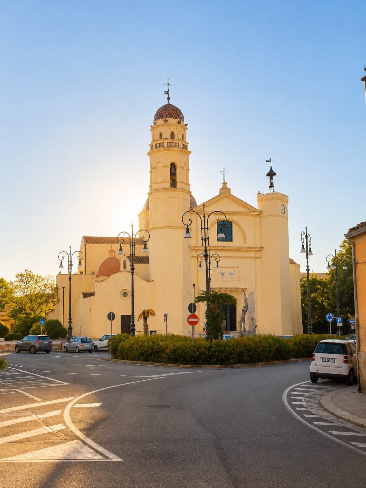
Il principale monumento religioso di Quartu Sant'Elena, a pochi passi dalla camera.
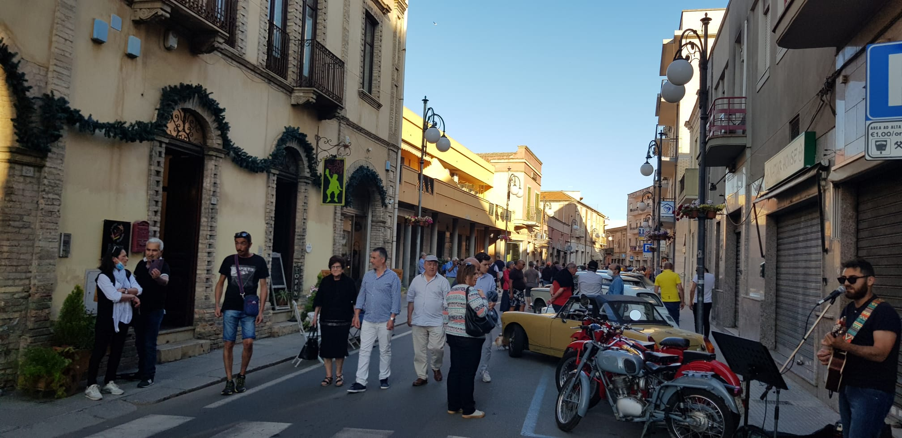
La storica via commerciale del centro, con bar, negozi, gelaterie e servizi nelle immediate vicinanze.

Uno spazio verde centrale; su un lato si trova anche il terminal degli autobus CTM.
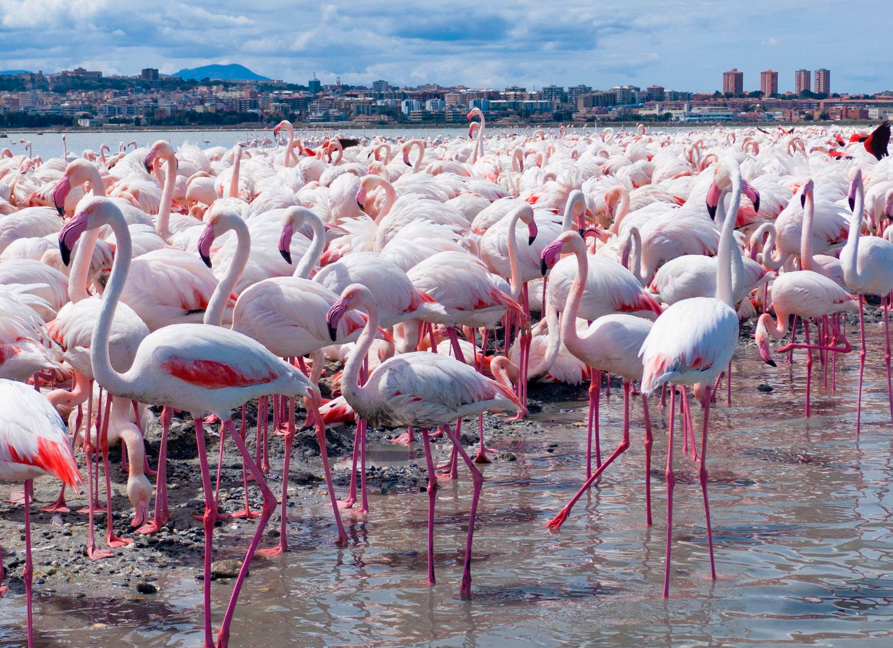
Un'area naturale celebre per i fenicotteri rosa, tra Quartu Sant'Elena e Cagliari.
Il capoluogo sardo, con il quartiere Castello, il Bastione, il porto, shopping e vita serale.
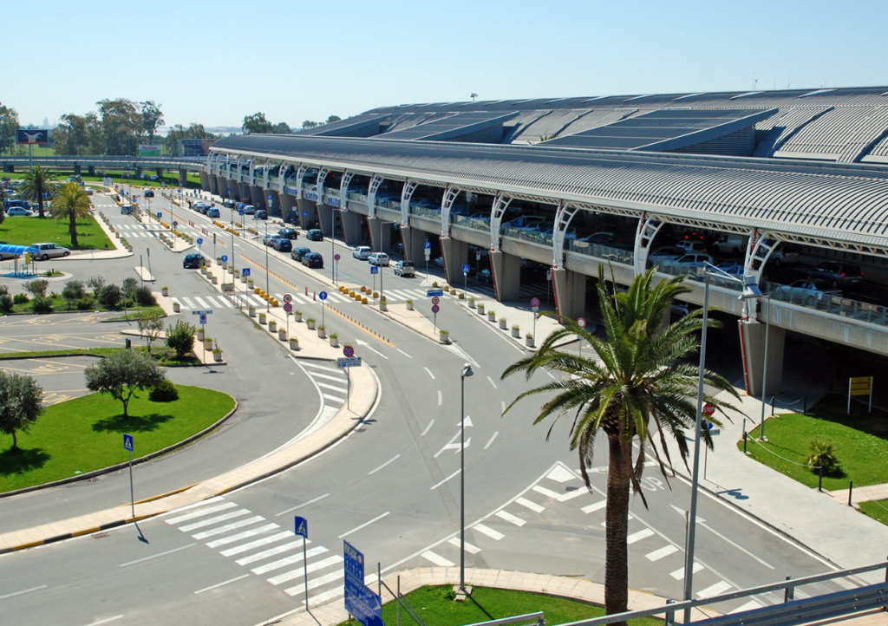
Il principale aeroporto del sud Sardegna è facilmente raggiungibile dalla struttura.
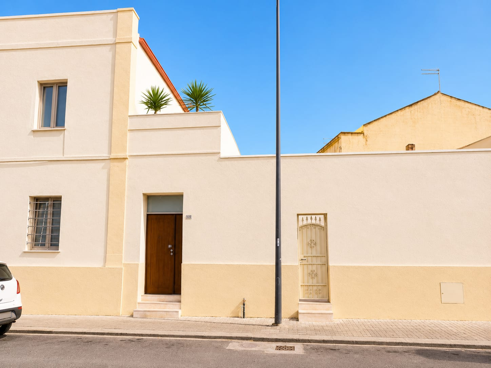
Camera privata con ingresso indipendente nel cuore del centro storico di Quartu Sant'Elena.
Grazie alla posizione centrale puoi esplorare Quartu a piedi e raggiungere facilmente Cagliari, il Poetto e il Parco di Molentargius. Le fermate BUS CTM e ARST nelle immediate vicinanze collegano comodamente le più belle spiagge del Sud Sardegna.
Sapori del centro
Scopri il centro di Quartu a piedi. Abbiamo selezionato i locali che consigliamo più volentieri ai nostri ospiti: colazioni, aperitivi, pizzerie, ristoranti, sushi e gelaterie, tutti raggiungibili comodamente a piedi da Marconi306.
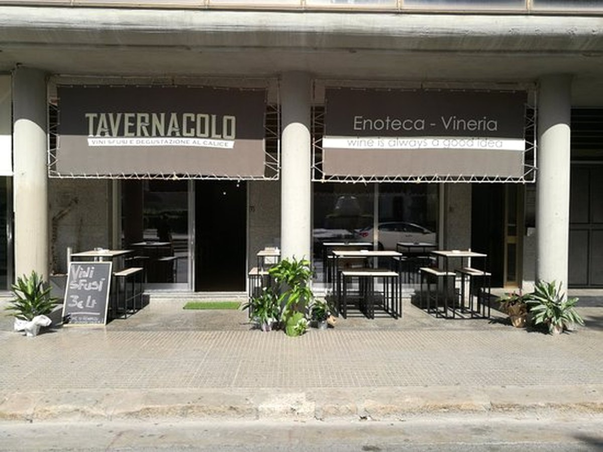
Vini, taglieri e aperitivi nel centro storico.
Indicazioni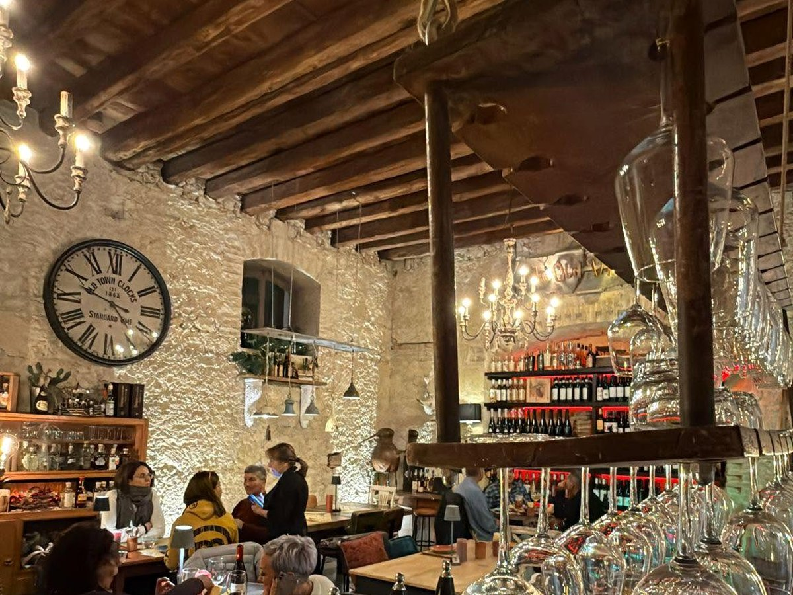
Drink e atmosfera informale in un locale caratteristico.
Indicazioni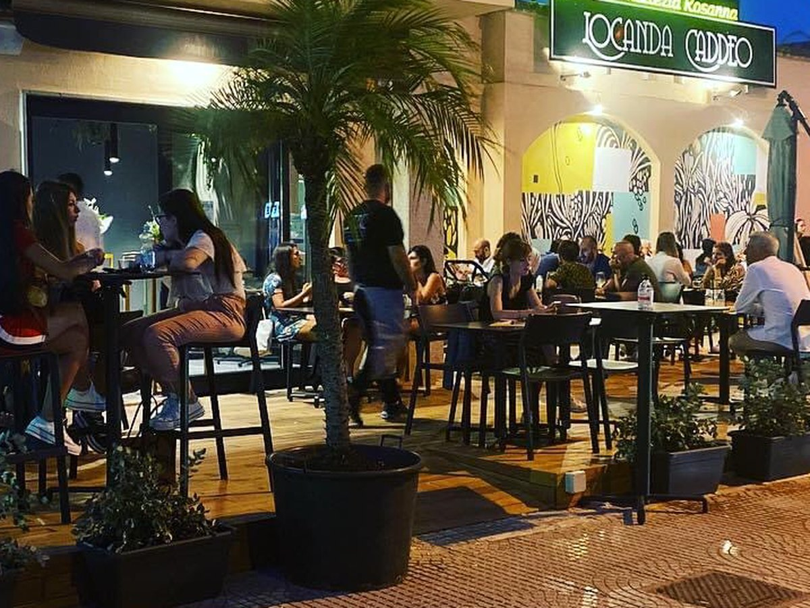
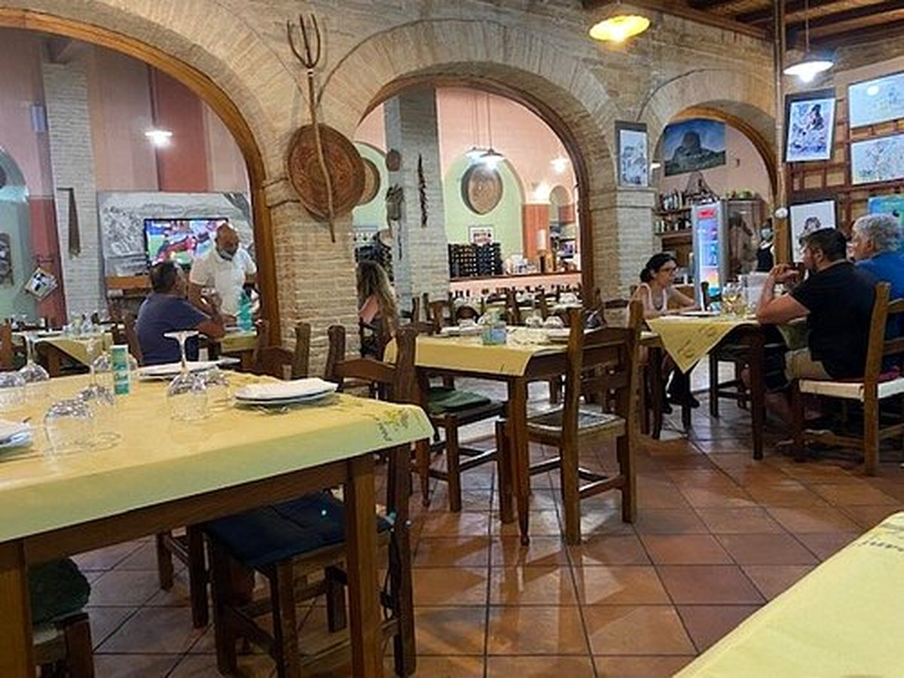
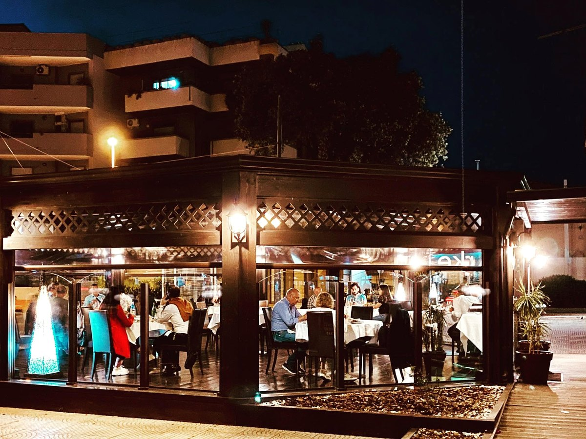
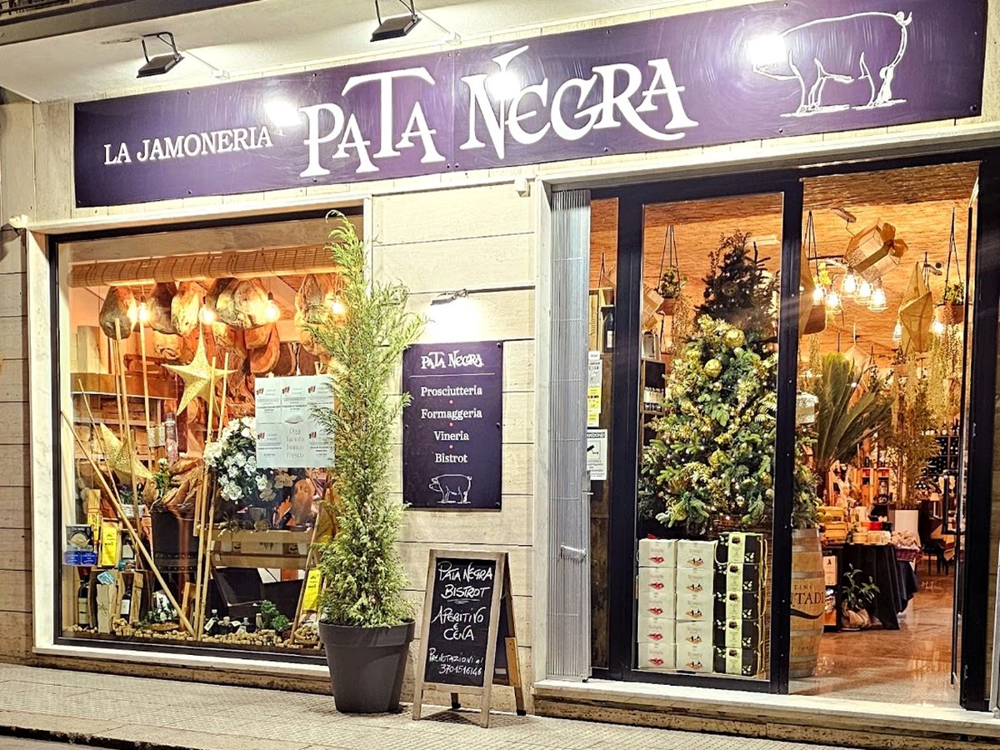
Taglieri, prosciutti iberici e ottimi vini.
IndicazioniMare
Da Quartu Sant'Elena puoi esplorare il litorale meridionale, dal Poetto a Mari Pintau, Villasimius, Costa Rei e Chia. Alcune località sono raggiungibili anche con collegamenti con bus CTM o ARST, variabili in base alla destinazione e alla stagione.

La spiaggia simbolo di Cagliari e Quartu Sant'Elena, ideale per mare, sport e relax.

Una delle calette più iconiche della costa di Quartu, famosa per il mare turchese.

Una lunga spiaggia di sabbia dorata e mare cristallino, perfetta per famiglie e relax.

Una baia tranquilla con acque trasparenti, ideale per una giornata rilassante.

Una baia elegante e riparata, con mare limpido e paesaggi naturali.

Una delle spiagge più iconiche della Sardegna, dominata dalla storica torre.

Sabbia chiara, fondali bassi e acqua cristallina: ideale anche per famiglie.
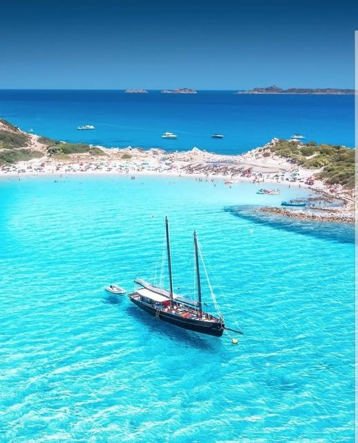
Una baia spettacolare tra mare turchese e rocce granitiche.

Una lunga distesa di sabbia chiara con mare turchese e ampi spazi.
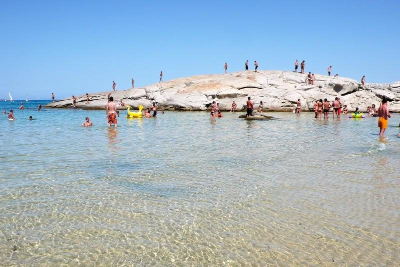
Il celebre scoglio granitico della Costa Rei, circondato da acque basse e trasparenti.

Una delle spiagge più estese del sud Sardegna, con sabbia finissima e mare caraibico.
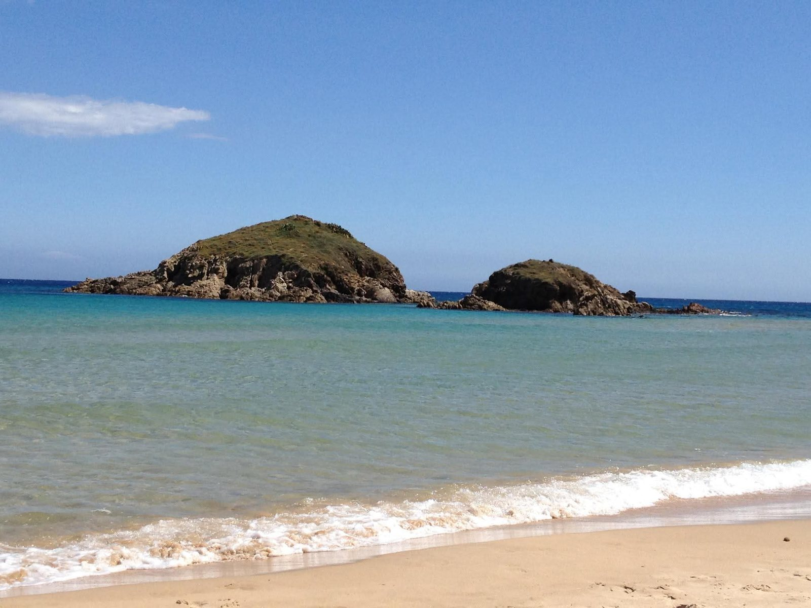
Una spiaggia celebre di Chia, con sabbia dorata e il caratteristico isolotto.

Una piccola baia immersa nella macchia mediterranea, naturale e suggestiva.
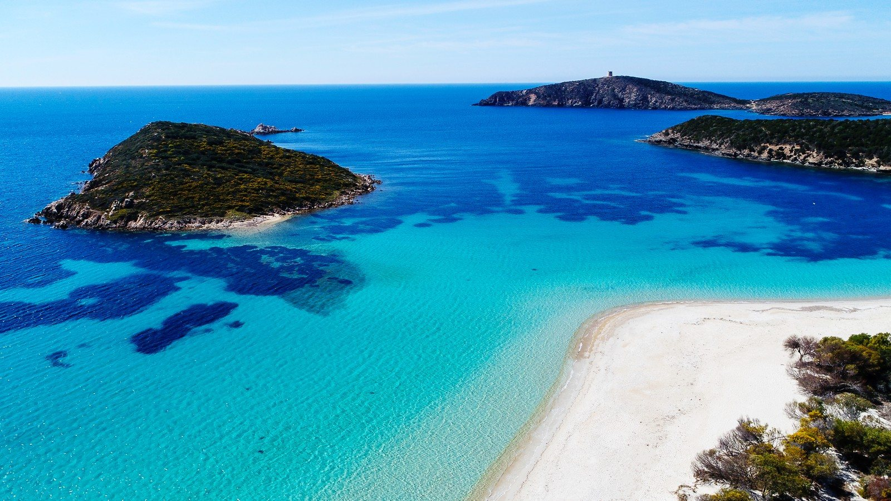
Una delle spiagge più amate della Sardegna, con acque cristalline e isolotto panoramico.
Muoversi senza auto
Marconi306 è nel centro di Quartu: molte destinazioni sono raggiungibili a piedi, mentre per il Poetto, Cagliari, l’aeroporto, Villasimius e Costa Rei puoi combinare autobus, treno, collegamenti ARST e auto.
A pochi passi
Le fermate dell’area centrale e il terminal sul lato di Parco Matteotti permettono di raggiungere Cagliari, il Poetto e l’area metropolitana.
Trova la fermata più vicina ↗Mare
Le linee costiere CTM più utili sono PF e PQ; in estate si aggiungono servizi dedicati come PEX. Controlla sempre la fermata e l’orario in BusFinder.
Apri percorso ↗Centro città
Per il centro e Piazza Matteotti usa BusFinder o Google Maps: le linee e gli instradamenti possono cambiare in base a giorno, orario e lavori stradali.
Apri percorso ↗Treni e bus
Raggiungi Piazza Matteotti con CTM. Dalla stazione partono i treni regionali, compreso il collegamento per l’aeroporto.
Apri percorso ↗Arrivi e partenze
Con i mezzi pubblici: CTM fino alla stazione di Cagliari, poi treno regionale per Elmas Aeroporto. In auto o taxi il tragitto è diretto.
Apri percorso ↗Escursioni in giornata
Due mete iconiche del Sud Sardegna, raggiungibili in auto oppure con i collegamenti extraurbani ARST da Cagliari.
Escursione in giornata
In auto occorrono indicativamente 45–50 minuti. Con i mezzi pubblici, raggiungi l’Autostazione ARST di Cagliari e prosegui con le linee extraurbane 101 o 135, verificando sempre gli orari del giorno.
Apri percorso ↗Escursione in giornata
In auto considera circa 55–65 minuti, in base alla zona scelta. In autobus, dall’Autostazione ARST di Cagliari sono disponibili collegamenti extraurbani delle linee 101 e 135; il viaggio è più lungo e gli orari variano.
Apri percorso ↗Estate 2026
È previsto un servizio estivo CTM dal centro di Quartu verso il litorale. Essendo stagionale, consulta sempre gli orari aggiornati prima della partenza.
Controlla il servizio CTM ↗App utili
Per evitare informazioni superate, verifica sempre il percorso poco prima di partire.
Posizione
Basilica, Parco Matteotti e Via Eligio Porcu sono a circa un minuto a piedi; Viale Colombo a circa cinque minuti. Il terminal dei bus CTM e le fermate dei bus ARST vicine rendono più semplice raggiungere Cagliari, il Poetto e diverse località della costa anche senza auto.
Indicazioni stradaliDisponibilità aggiornata
Il calendario riunisce le disponibilità di Booking, Airbnb e delle prenotazioni dirette. Seleziona arrivo e partenza, inserisci i dati e completa il pagamento per ricevere la conferma immediata.
Le date non disponibili provengono dai calendari collegati e dalle prenotazioni dirette. Durante il pagamento il periodo viene riservato per 10 minuti.
Prenotazione diretta
Riceverai anche la conferma del pagamento da PayPal. Conserva il codice della prenotazione.